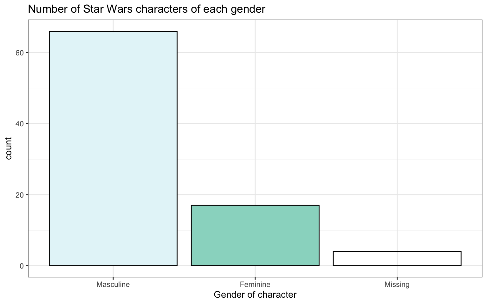

Appendix H — Data Import
Intended Learning Outcomes
Set-up
Setup
- Open your
reproresproject - Create a new quarto file called
app-data-import.qmd - Update the YAML header
- Replace the setup chunk with the one below:
```{r}
#| label: setup
#| include: false
library(tidyverse) # includes readr & tibble
library(rio) # for almost any data import/export
library(haven) # for SPSS, Stata,and SAS files
library(readxl) # for Excel files
library(googlesheets4) # for Google Sheets
```Download the Data import cheatsheet.
H.1 Built-in data
You’ll likely want to import you own data to work with, however, Base R also comes with built-in datasets and these can be very useful for learning new functions and packages. Additionally, some packages, like data() function lists the datasets available.
Type the name of a dataset into the console to see the data. For example, type ?table1 into the console to see the dataset description for table1, which is a dataset included with
You can also use the data() function to load a dataset into your global environment.
H.2 Looking at data
Now that you’ve loaded some data, look the upper right hand window of RStudio, under the Environment tab. You will see the object table1 listed, along with the number of observations (rows) and variables (columns). This is your first check that everything went OK.
Always, always, always, look at your data once you’ve created or loaded a table. Also look at it after each step that transforms your table. There are three main ways to look at your table: View(), print(), tibble::glimpse().
H.2.1 View()
A familiar way to look at the table is given by View() (uppercase ‘V’), which opens up a data table in the console pane using a viewer that looks a bit like Excel. This command can be useful in the console, but don’t ever put this one in a script because it will create an annoying pop-up window when the user runs it. You can also click on an object in the environment pane to open it in the same interface. You can close the tab when you’re done looking at it; it won’t remove the object.
H.2.2 print()
The print() method can be run explicitly, but is more commonly called by just typing the variable name on a blank line. The default is not to print the entire table, but just the first 10 rows.
Let’s look at the table1 table that we loaded above. Depending on how wide your screen is, you might need to click on an arrow at the right of the table to see the last column.
| country | year | cases | population |
|---|---|---|---|
| Afghanistan | 1999 | 745 | 19987071 |
| Afghanistan | 2000 | 2666 | 20595360 |
| Brazil | 1999 | 37737 | 172006362 |
| Brazil | 2000 | 80488 | 174504898 |
| China | 1999 | 212258 | 1272915272 |
| China | 2000 | 213766 | 1280428583 |
H.2.3 glimpse()
The function tibble::glimpse() gives a sideways version of the table. This is useful if the table is very wide and you can’t easily see all of the columns. It also tells you the data type of each column in angled brackets after each column name.
H.2.4 summary()
You can get a quick summary of a dataset with the summary() function, which can be useful for spotting things like if the minimum or maximum values are clearly wrong, or if R thinks that a <a href=‘https://psyteachr.github.io/glossary/n#nominal’ target=’_blank’ class=‘glossary’ title=‘Categorical variables that don’t have an inherent order, such as types of animal.’>nominal variable is numeric. For example, if you had labelled gender as 1, 2, and 3 rather than male, female, and non-binary, summary() would calculate a mean and median even though this isn’t appropriate for the data. This can be a useful flag that you need to take further steps to correct your data.
Note that because population is a very, very large number, R will use scientific notation.
country year cases population
Length:6 Min. :1999 Min. : 745 Min. :1.999e+07
Class :character 1st Qu.:1999 1st Qu.: 11434 1st Qu.:5.845e+07
Mode :character Median :2000 Median : 59112 Median :1.733e+08
Mean :2000 Mean : 91277 Mean :4.901e+08
3rd Qu.:2000 3rd Qu.:179316 3rd Qu.:9.983e+08
Max. :2000 Max. :213766 Max. :1.280e+09 H.3 Importing data
Built-in data are nice for examples, but you’re probably more interested in your own data. There are many different types of files that you might work with when doing data analysis. These different file types are usually distinguished by the three-letter extension following a period at the end of the file name (e.g., .xls).
Download this directory of data files, unzip the folder, and save the data directory in the 04-data project directory.
H.3.1 rio::import()
The type of data files you have to work with will likely depend on the software that you typically use in your workflow. The rio::import() and rio::export().
H.3.2 File type specific import
However, it is also useful to know the specific functions that are used to import different file types because it is easier to discover features to deal with complicated cases, such as when you need to skip rows, rename columns, or choose which Excel sheet to use.
Look at the help for each function above and read through the Arguments section to see how you can customise import.
If you keep data in Google Sheets, you can access it directly from R using <pkg>googlesheets4", "https://googlesheets4.tidyverse.org/"). The code below imports data from a public sheet. You can set the ss argument to the entire URL for the target sheet, or just the section after “https://docs.google.com/spreadsheets/d/”.
H.3.3 Column data types
Use glimpse() to see how these different functions imported the data with slightly different data types. This is because the different file types store data slightly differently. For example, SPSS stores factors as numbers, so the factor column contains the values 1, 2, 3 rather than low, med, high. It also stores logical values as 0 and 1 instead or TRUE and FALSE.
Rows: 6
Columns: 6
$ character <chr> "A", "B", "C", "D", "E", "F"
$ factor <chr> "high", "low", "med", "high", "low", "med"
$ integer <dbl> 1, 2, 3, 4, 5, 6
$ double <dbl> 1.5, 2.5, 3.5, 4.5, 5.5, 6.5
$ logical <lgl> TRUE, TRUE, FALSE, FALSE, NA, TRUE
$ date <date> 2025-09-16, 2025-09-15, 2025-09-14, 2025-09-13, 2025-09-12, …Rows: 6
Columns: 6
$ character <chr> "A", "B", "C", "D", "E", "F"
$ factor <chr> "high", "low", "med", "high", "low", "med"
$ integer <dbl> 1, 2, 3, 4, 5, 6
$ double <dbl> 1.5, 2.5, 3.5, 4.5, 5.5, 6.5
$ logical <lgl> TRUE, TRUE, FALSE, FALSE, NA, TRUE
$ date <dttm> 2025-09-16, 2025-09-15, 2025-09-14, 2025-09-13, 2025-09-12, …Rows: 6
Columns: 6
$ character <chr> "A", "B", "C", "D", "E", "F"
$ factor <dbl+lbl> 3, 1, 2, 3, 1, 2
$ integer <dbl> 1, 2, 3, 4, 5, 6
$ double <dbl> 1.5, 2.5, 3.5, 4.5, 5.5, 6.5
$ logical <dbl> 1, 1, 0, 0, NA, 1
$ date <date> 2025-09-16, 2025-09-15, 2025-09-14, 2025-09-13, 2025-09-12, …Rows: 6
Columns: 6
$ character <chr> "A", "B", "C", "D", "E", "F"
$ factor <chr> "high", "low", "med", "high", "low", "med"
$ integer <dbl> 1, 2, 3, 4, 5, 6
$ double <dbl> 1.5, 2.5, 3.5, 4.5, 5.5, 6.5
$ logical <lgl> TRUE, TRUE, FALSE, FALSE, NA, TRUE
$ date <dttm> 2021-11-22, 2021-11-21, 2021-11-20, 2021-11-19, 2021-11-18, …The
The “Column specification” tells you which data type each column is. You can review data types in Appendix I. Options are:
read_csv() will guess what type of data each variable is and normally it is pretty good at this. However, if it makes a mistake, such as reading the “date” column as a character, you can manually set the column data types.
First, run spec() on the dataset which will give you the full column specification that you can copy and paste:
cols(
character = col_character(),
factor = col_character(),
integer = col_double(),
double = col_double(),
logical = col_logical(),
date = col_date(format = "")
)Then, we create an object using the code we just copied that lists the correct column types. Factor columns will always import as character data types, so you have to set their data type manually with col_factor() and set the order of levels with the levels argument. Otherwise, the order defaults to the order they appear in the dataset. For our demo dataset, we will tell R that the factor variable is a factor by using col_factor() and we can also specify the order of the levels so that they don’t just appear alphabetically. Additionally, we can also specify exactly what format our date variable is in using %Y-%m-%d.
We then save this column specification to an object, and then add this to the col_types argument when we call read_csv().
For dates, you might need to set the format your dates are in. See ?strptime for a list of the codes used to represent different date formats. For example, "%d-%b-%y" means that the dates are formatted like 31-Jan-21.
The functions from .xlsx sheets have a different, more limited way to specify the column types. You will have to convert factor columns and dates using mutate(), which you’ll learn about in Chapter 7, so most people let read_excel() guess data types and don’t set the col_types argument.
For SPSS data, whilst rio::import() will just read the numeric values of factors and not their labels, the function read_sav() from
Rows: 6
Columns: 6
$ character <chr> "A", "B", "C", "D", "E", "F"
$ factor <fct> high, low, med, high, low, med
$ integer <dbl> 1, 2, 3, 4, 5, 6
$ double <dbl> 1.5, 2.5, 3.5, 4.5, 5.5, 6.5
$ logical <dbl> 1, 1, 0, 0, NA, 1
$ date <date> 2025-09-16, 2025-09-15, 2025-09-14, 2025-09-13, 2025-09-12, …The way you specify column types for read_sheet() with
H.4 Creating data
If you need to create a small data table from scratch in R, use the tibble::tibble() function, and type the data right in. The tibble package is part of the tidyverse package that we loaded at the start of this chapter.
Let’s create a small table with the names of three Avatar characters and their bending type. The tibble() function takes arguments with the names that you want your columns to have. The values are vectors that list the column values in order.
If you don’t know the value for one of the cells, you can enter NA, which we have to do for Sokka because he doesn’t have any bending ability. If all the values in the column are the same, you can just enter one value and it will be copied for each row.
avatar <- tibble(
name = c("Katara", "Toph", "Sokka"),
bends = c("water", "earth", NA),
friendly = TRUE
)
# print it
avatar| name | bends | friendly |
|---|---|---|
| Katara | water | TRUE |
| Toph | earth | TRUE |
| Sokka | NA | TRUE |
You can also use the tibble::tribble() function to create a table by row, rather than by column. You start by listing the column names, each preceded by a tilde (~), then you list the values for each column, row by row, separated by commas (don’t forget a comma at the end of each row).
You don’t have to line up the columns in a tribble, but it can make it easier to spot errors.
You may not need to do this very often if you are primarily working with data that you import from spreadsheets, but it is useful to know how to do it anyway.
H.5 Writing data
If you have data that you want to save, use rio::export(), as follows.
This will save the data in CSV format to your working directory.
Writing to Google Sheets is a little trickier (if you never use Google Sheets feel free to skip this section). Even if a Google Sheet is publicly editable, you can’t add data to it without authorising your account.
You can authorise interactively using the following code (and your own email), which will prompt you to authorise “Tidyverse API Packages” the first time you do this. If you don’t tick the checkbox authorising it to “See, edit, create, and delete all your Google Sheets spreadsheets”, the next steps will fail.
# authorise your account
# this only needs to be done once per script
gs4_auth(email = "myemail@gmail.com")
# create a new sheet
sheet_id <- gs4_create(name = "demo-file",
sheets = "letters")
# define the data table to save
letter_data <- tibble(
character = LETTERS[1:5],
integer = 1:5,
double = c(1.1, 2.2, 3.3, 4.4, 5.5),
logical = c(T, F, T, F, T),
date = lubridate::today()
)
write_sheet(data = letter_data,
ss = sheet_id,
sheet = "letters")
## append some data
new_data <- tibble(
character = "F",
integer = 6L,
double = 6.6,
logical = FALSE,
date = lubridate::today()
)
sheet_append(data = new_data,
ss = sheet_id,
sheet = "letters")
# read the data
demo <- read_sheet(ss = sheet_id, sheet = "letters")- Create a new table called
familywith the first name, last name, and age of your family members (biological, adopted, or chosen). - Save it to a CSV file called “family.csv”.
- Clear the object from your environment by restarting R or with the code
remove(family). - Load the data back in and view it.
We’ll be working with tabular data a lot in this class, but tabular data is made up of vectors, which groups together data with the same basic data type. Appendix I explains some of this terminology to help you understand the functions we’ll be learning to process and analyse data.
H.6 Troubleshooting
What if you import some data and it guesses the wrong column type? The most common reason is that a numeric column has some non-numbers in it somewhere. Maybe someone wrote a note in an otherwise numeric column. Columns have to be all one data type, so if there are any characters, the whole column is converted to character strings, and numbers like 1.2 get represented as "1.2", which will cause very weird errors like "100" < "9" == TRUE. You can catch this by using glimpse() to check your data.
The data directory you downloaded contains a file called “mess.csv”. Let’s try loading this dataset.
Warning in (function (input = "", file = NULL, text = NULL, cmd = NULL, :
Stopped early on line 5. Expected 7 fields but found 0. Consider fill=TRUE and
comment.char=. First discarded non-empty line: <<junk,missing,0.72,b,1,2 -
3,2020-01-2>>When importing goes wrong, it’s often easier to fix it using the specific importing function for that file type (e.g., use read_csv() rather than rio::import(). This is because the problems tend to be specific to the file format and you can look up the help for these functions more easily. For CSV files, the import function is readr::read_csv.
# lazy = FALSE loads the data right away so you can see error messages
# this default changed in late 2021 and might change back soon
mess <- read_csv("data/mess.csv", lazy = FALSE)Warning: One or more parsing issues, call `problems()` on your data frame for details,
e.g.:
dat <- vroom(...)
problems(dat)You’ll get a warning about parsing issues and the data table is just a single column. View the file data/mess.csv by clicking on it in the File pane, and choosing “View File”. Here are the first 10 lines. What went wrong?
| This is my messy dataset |
|---|
| junk,order,score,letter,good,min_max,date |
| junk,1,-1,a,1,1 - 2,2020-01-1 |
| junk,missing,0.72,b,1,2 - 3,2020-01-2 |
| junk,3,-0.62,c,FALSE,3 - 4,2020-01-3 |
| junk,4,2.03,d,T,4 - 5,2020-01-4 |
| junk,5,NA,e,1,5 - 6,2020-01-5 |
First, the file starts with a note: “This is my messy dataset” and then a blank line. The first line of data should be the column headings, so we want to skip the first two lines. You can do this with the argument skip in read_csv().
Rows: 26
Columns: 7
$ junk <chr> "junk", "junk", "junk", "junk", "junk", "junk", "junk", "junk"…
$ order <chr> "1", "missing", "3", "4", "5", "6", "7", "8", "9", "10", "11",…
$ score <dbl> -1.00, 0.72, -0.62, 2.03, NA, 0.99, 0.03, 0.67, 0.57, 0.90, -1…
$ letter <chr> "a", "b", "c", "d", "e", "f", "g", "h", "i", "j", "k", "l", "m…
$ good <chr> "1", "1", "FALSE", "T", "1", "0", "T", "TRUE", "1", "T", "F", …
$ min_max <chr> "1 - 2", "2 - 3", "3 - 4", "4 - 5", "5 - 6", "6 - 7", "7 - 8",…
$ date <chr> "2020-01-1", "2020-01-2", "2020-01-3", "2020-01-4", "2020-01-5…OK, that’s a little better, but this table is still a serious mess in several ways:
-
junkis a column that we don’t need -
ordershould be an integer column -
goodshould be a logical column -
gooduses all kinds of different ways to record TRUE and FALSE values -
min_maxcontains two pieces of numeric information, but is a character column -
dateshould be a date column
We’ll learn how to deal with this mess in Chapter 6 and Chapter 7, but we can fix a few things by setting the col_types argument in read_csv() to specify the column types for our two columns that were guessed wrong and skip the “junk” column. The argument col_types takes a list where the name of each item in the list is a column name and the value is from the table below. You can use the function, like col_double() or the abbreviation, like "d"; for consistency with earlier in this chapter we will use the function names. Omitted column names are guessed.
| function | abbreviation | |
|---|---|---|
| col_logical() | l | logical values |
| col_integer() | i | integer values |
| col_double() | d | numeric values |
| col_character() | c | strings |
| col_factor(levels, ordered) | f | a fixed set of values |
| col_date(format = ““) | D | with the locale’s date_format |
| col_time(format = ““) | t | with the locale’s time_format |
| col_datetime(format = ““) | T | ISO8601 date time |
| col_number() | n | numbers containing the grouping_mark |
| col_skip() | _, - | don’t import this column |
| col_guess() | ? | parse using the “best” type based on the input |
# omitted values are guessed
# ?col_date for format options
ct <- cols(
junk = col_skip(), # skip this column
order = col_integer(),
good = col_logical(),
date = col_date(format = "%Y-%m-%d")
)
tidier <- read_csv("data/mess.csv",
skip = 2,
col_types = ct,
lazy = FALSE)Warning: One or more parsing issues, call `problems()` on your data frame for details,
e.g.:
dat <- vroom(...)
problems(dat)You will get a message about parsing issues when you run this that tells you to run the problems() function to see a table of the problems. Warnings look scary at first, but always start by reading the message.
| row | col | expected | actual | file |
|---|---|---|---|---|
| 3 | 2 | an integer | missing | data/mess.csv |
The output of problems() tells you what row (3) and column (2) the error was found in, what kind of data was expected (an integer), and what the actual value was (missing). If you specifically tell read_csv() to import a column as an integer, any characters (i.e., not numbers) in the column will produce a warning like this and then be recorded as NA. You can manually set what missing values are recorded as with the na argument.
Now order is an integer variable where any empty cells contain NA. The variable good is a logical value, where 0 and F are converted to FALSE, while 1 and T are converted to TRUE. The variable date is a date type (adding leading zeros to the day). We’ll learn in later chapters how to fix other problems, such as the min_max column containing two different types of data.
| order | score | letter | good | min_max | date |
|---|---|---|---|---|---|
| 1 | -1 | a | TRUE | 1 - 2 | 2020-01-01 |
| NA | 0.72 | b | TRUE | 2 - 3 | 2020-01-02 |
| 3 | -0.62 | c | FALSE | 3 - 4 | 2020-01-03 |
| 4 | 2.03 | d | TRUE | 4 - 5 | 2020-01-04 |
| 5 | NA | e | TRUE | 5 - 6 | 2020-01-05 |
| 6 | 0.99 | f | FALSE | 6 - 7 | 2020-01-06 |
H.7 Working with real data
It’s worth highlighting at this point that working with real data can be difficult because each dataset can be messy in its own way. Throughout this course we will show you common errors and how to fix them, but be prepared that when you start with working your own data, you’ll likely come across problems we don’t cover in the course and that’s just part of joy of learning programming. You’ll also get better at looking up solutions using sites like Stack Overflow and there’s a fantastic #rstats community on Twitter you can ask for help.
You may also be tempted to fix messy datasets by, for example, opening up Excel and editing them there. Whilst this might seem easier in the short term, there’s two serious issues with doing this. First, you will likely work with datasets that have recurring messy problems. By taking the time to solve these problems with code, you can apply the same solutions to a large number of future datasets so it’s more efficient in the long run. Second, if you edit the spreadsheet, there’s no record of what you did. By solving these problems with code, you do so reproducibly and you don’t edit the original data file. This means that if you make an error, you haven’t lost the original data and can recover.
H.8 Exercises
For the final step in this chapter, we will create a report using one of the in-built datasets to practice the skills you have used so far. You may need to refer back to previous chapters to help you complete these exercises and you may also want to take a break before you work through this section. We’d also recommend you knit at every step so that you can see how your output changes.
H.8.1 New Markdown
Create and save a new R Markdown document named starwars_report.Rmd. In the set-up code chunk load the packages tidyverse and rio.
We’re going to use the built-in starwars dataset that contains data about Star Wars characters. You can learn more about the dataset by using the ?help function.
H.8.2 Import and export the dataset
- First, load the in-built dataset into the environment. Type and run the code to do this in the console; do not save it in your Markdown.
- Then, export the dataset to a .csv file and save it in your
datadirectory. Again, do this in the console. - Finally, import this version of the dataset using
read_csv()to an object namedstarwars- you can put this code in your Markdown.
H.8.3 Convert column types
- Check the column specification of
starwars. - Create a new column specification that lists the following columns as factors:
hair_color,skin_color,eye_color,sex,gender,homeworld, andspeciesand skips the following columns:films,vehicles, andstarships(this is because these columns contain multiple values and are stored as lists, which we haven’t covered how to work with). You do not have to set the factor orders (although you can if you wish). - Re-import the dataset, this time with the corrected column types.
spec(starwars)
corrected_cols <- cols(
name = col_character(),
height = col_double(),
mass = col_double(),
hair_color = col_factor(),
skin_color = col_factor(),
eye_color = col_factor(),
birth_year = col_double(),
sex = col_factor(),
gender = col_factor(),
homeworld = col_factor(),
species = col_factor(),
films = col_skip(),
vehicles = col_skip(),
starships = col_skip()
)
starwars <- read_csv("data/starwars.csv", col_types = corrected_cols)cols(
name = col_character(),
height = col_double(),
mass = col_double(),
hair_color = col_character(),
skin_color = col_character(),
eye_color = col_character(),
birth_year = col_double(),
sex = col_character(),
gender = col_character(),
homeworld = col_character(),
species = col_character(),
films = col_character(),
vehicles = col_character(),
starships = col_character()
)H.8.4 Plots
Produce the following plots and one plot of your own choosing. Write a brief summary of what each plot shows and any conclusions you might reach from the data.


ggplot(starwars, aes(height, mass)) +
geom_point() +
labs(title = "Mass (kg) by height (cm) distribution of Star Wars Characters") +
theme_classic() +
scale_x_continuous(breaks = seq(from = 0, to = 300, by = 50)) +
scale_y_continuous(breaks = seq(from = 0, to = 2000, by = 100)) +
coord_cartesian(xlim = c(0, 300))ggplot(starwars, aes(x = gender, fill = gender)) +
geom_bar(show.legend = FALSE, colour = "black") +
scale_x_discrete(name = "Gender of character", labels = (c("Masculine", "Feminine", "Missing"))) +
scale_fill_brewer(palette = 2) +
labs(title = "Number of Star Wars characters of each gender") +
theme_bw()H.8.5 Make it look nice
- Add at least one Star Wars related image from an online source
- Hide the code and any messages from the knitted output
- Resize any images as you see fit
```{r}
#| echo: false
#| out-width: "50%"
#| fig-cap: "Adaptation of Star Wars logo created by Weweje; original logo by Suzy Rice, 1976. CC-BY-3.0"
#| fig-alt: "The Star Wars logo, with the word STAR on top and WARS on the bottom."
knitr::include_graphics("https://upload.wikimedia.org/wikipedia/commons/thumb/c/ce/Star_wars2.svg/2880px-Star_wars2.svg.png")
```
Glossary
| term | definition |
|---|---|
| argument | A variable that provides input to a function. |
| character | A data type representing strings of text. |
| console | The pane in RStudio where you can type in commands and view output messages. |
| data-type | The kind of data represented by an object. |
| double | A data type representing a real decimal number |
| extension | The end part of a file name that tells you what type of file it is (e.g., .R or .Rmd). |
| global-environment | The interactive workspace where your script runs |
| integer | A data type representing whole numbers. |
| logical | A data type representing TRUE or FALSE values. |
| na | A missing value that is “Not Available” |
| nominal | Categorical variables that don't have an inherent order, such as types of animal. |
| numeric | A data type representing a real decimal number or integer. |
| panes | RStudio is arranged with four window “panes”. |
| tabular-data | Data in a rectangular table format, where each row has an entry for each column. |
| tidyverse | A set of R packages that help you create and work with tidy data |
| url | The address of a web page (uniform resource locator) |
| vector | A type of data structure that collects values with the same data type, like T/F values, numbers, or strings. |
Further resources
- Data import cheatsheet
- Chapter 11: Data Import in R for Data Science
- Multi-row headers